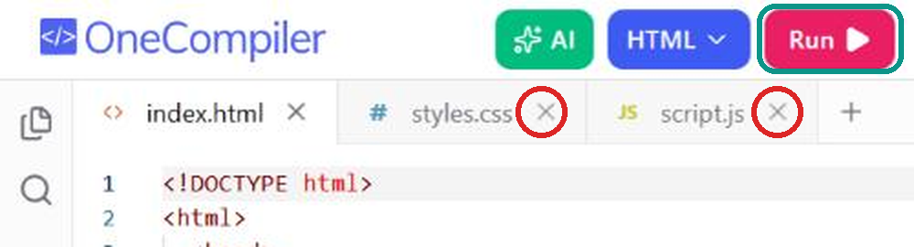

Modulo · Fondamenti di IA 2
Come funziona un modello linguistico
Language model, LLM e SLM, token, contesto e prompt
Giacomo Bocchese
Fondamenti di IA 2 · Ripasso
Ripasso: cos'è un modello linguistico
Un modello linguistico (in inglese language model) è un modello che riceve un testo e prevede come continua.
IngressoModelloUscita
"Il gatto è salito sul…"→modello linguistico→"tetto"
1È una rete neurale di tipo transformer, con moltissimi parametri.
2È stato addestrato su enormi quantità di testo: ha imparato a prevedere la parola che viene dopo.
Fondamenti di IA 2 · Ripasso
Ripasso: il modello scrive una parola alla volta
1Per ogni parola possibile il modello calcola una probabilità.
2Ne sceglie una, la aggiunge al testo e ripete.
3Ripetendo questo passo, parola dopo parola, scrive una risposta intera.
Il gatto è salito sul ?
tetto58%
divano17%
tavolo11%
albero9%
Per prevedere ogni parola il modello rilegge tutto il testo, dall'inizio, compresa la parola appena aggiunta.
Fondamenti di IA 2 · Il modello linguistico
Contesto, modello e risposta
Contesto
Istruzioni dell'app
Messaggi precedenti
File allegati
Promptla nostra richiesta
→
Modello
linguistico
→
Risposta
Gentilecliente,laringraziamo…
↺ Ogni parola generata viene aggiunta al contesto. Per prevedere la successiva il modello rilegge tutto il contesto.
1Il contesto è tutto il testo che il modello legge prima di rispondere.
2Il prompt, cioè ciò che scriviamo noi, è solo una parte del contesto.
Fondamenti di IA 2 · Grandi e piccoli
Large language model (LLM)
1Un LLM è un modello linguistico molto grande: ha più di 50 miliardi di parametri, spesso centinaia o migliaia di miliardi.
2Funziona in grandi centri di calcolo (data center): lo usiamo attraverso internet ed è impossibile eseguirlo su un normale computer.
3È più intelligente: scrive bene in molte lingue e svolge compiti complessi.
GPT-6OpenAI · ChatGPT
Claude Opus 5.5Anthropic
Gemini 4Google
DeepSeek V4DeepSeek
Qwen 3.8 MaxAlibaba
Kimi K3Moonshot AI
OpenAI, Anthropic e Google non dichiarano quanti parametri hanno i loro modelli. I più grandi modelli pubblici superano i mille miliardi.
Fondamenti di IA 2 · Grandi e piccoli
Small language model (SLM)
1Uno SLM è un modello linguistico abbastanza piccolo da funzionare su un normale computer o su un telefono.
2Ha meno di 20 miliardi di parametri, spesso solo pochi miliardi.
3Funziona anche senza internet e i dati restano sul dispositivo, ma è meno intelligente e sbaglia più spesso.
LFM3 1.7BLiquid AI · 1,7 miliardi · ott 2026 · quello della prova
Qwen 3.5 SmallAlibaba · da 0,8 a 9 miliardi · mar 2026
Gemma 4 E2B / E4BGoogle · circa 2 e 4 miliardi · apr 2026
Ministral 3Mistral · 3, 8 e 14 miliardi · dic 2025
Gemini NanoGoogle · nei telefoni Android
Fondamenti di IA 2 · Grandi e piccoli
Quanti parametri: dal modello della casa agli LLM
Il modello della casa2
Il modello delle cifre54.000
Il mini modello delle lettere340.000
Uno SLM20 miliardi
Un grande LLM1.000 miliardi
101102103104105106107108109101010111012parametri
0200 mld400 mld600 mld800 mld1.000 mldparametri
Pratica · in coppia · Arena e Liquid Playground
Grande contro piccolo
1Il modello grande
Apri arena.ai, scegli la modalità Direct e un modello grande, per esempio claude-sonnet-5.5.
2Il modello piccolo
Apri playground.liquid.ai e scegli LFM3-1.7B: un modello da 1,7 miliardi di parametri, uscito a ottobre 2026.
3Fai le stesse domande
Riassumi la seconda guerra mondiale in tre righe.
Quante lettere r ci sono in «il ramarro marrone corre»?
Quante lettere "r" ci sono in «il ramarro marrone corre»?
4Un problema di ragionamento
Ho 3 mele, ne mangio una, ne compro altre 5 e taglio a metà tutte le mele che ho. Due metà marciscono. Quante mezze mele posso ancora mangiare?
Confronta correttezza, chiarezza e velocità.
Pratica · in coppia · Arena, Liquid Playground e OneCompiler
Grande contro piccolo: scrivere una pagina web
1Scegli una sfida
Crea un unico file HTML con un gioco: un quadrato compare in punti casuali e bisogna cliccarlo. Mostra i punti e un timer di 30 secondi.
Crea un unico file HTML con un orologio analogico che segna l'ora attuale.
2Oppure un disegno
Crea un unico file HTML con un disegno in SVG: un paesaggio con montagne, un lago, il sole e una casetta.
3Chiedi a entrambi i modelli
Invia la stessa sfida al modello grande su arena.ai e al modello piccolo su playground.liquid.ai. Copia il codice che scrivono.
La pagina funziona? Quale è fatta meglio?
4Guarda il risultato
Apri onecompiler.com/html e chiudi con la × i file styles.css e script.js. In index.html cancella tutto, incolla il codice e premi Run.

Fondamenti di IA 2 · Grandi e piccoli
Hai notato cosa fa il modello quando sbaglia?
1
Non dice «non lo so»: risponde comunque, con lo stesso tono sicuro di quando ha ragione.
2
Per questo tocca a chi lo usa verificare le risposte e provare il codice prima di fidarsi.
Una risposta che contiene informazioni false o inventate, presentate come se fossero vere, si chiama allucinazione (in inglese hallucination).
Fondamenti di IA 2 · I token
Il modello legge e scrive token, non parole
Il gatto è salito sul tetto.
10token
The cat climbed onto the roof.
7token
1Un token è un pezzo di testo: una parola intera, una parte di parola o un segno di punteggiatura.
2Finora abbiamo detto «parola» per semplicità: in realtà il modello prevede il token successivo.
3La stessa frase in italiano richiede di solito più token che in inglese.
Fondamenti di IA 2 · I token
Quanto è lungo un testo in token
| Token | In italiano, circa |
|---|
| 1 token | ⅔ di parola |
| 1.000 token | 650 parole: una pagina e mezza |
| 100.000 token | 65.000 parole: un romanzo di 250 pagine |
| 1.000.000 token | 650.000 parole: circa tre volte I promessi sposi |
Fondamenti di IA 2 · I token
Cosa dipende dal numero di token
1Il costo di utilizzo del modello: chi lo usa paga in base ai token usati.
2La quantità massima di testo che il modello può elaborare insieme: la finestra di contesto.
3I limiti di utilizzo delle app: dopo un certo numero di token l'app chiede di aspettare.
| Modello | Prezzo per milione di token | Testo massimo (token) |
|---|
| Claude Opus 5.5 Anthropic | 12 $ | 1 milione |
| GPT-6 Sol OpenAI | 6 $ | 1,1 milioni |
| DeepSeek V4 Pro DeepSeek | 2,6 $ | 1 milione |
| Claude Haiku 5.5 Anthropic | 0,30 $ | 1 milione |
| Gemma 4 31B Google | 0,30 $ | 128.000 |
| LFM3 1.7B Liquid AI | 0,14 $ | 256.000 |
Pratica · in coppia · platform.openai.com/tokenizer
Proviamo a dividere un testo in token
1Apri il tokenizer
Vai su platform.openai.com/tokenizer: non serve un account. Incolla un testo e guarda i pezzi colorati.
2Italiano e inglese
Buongiorno, le scrivo per chiedere informazioni sulla fattura.
Good morning, I am writing to ask for information about the invoice.
3Una parola lunga
precipitevolissimevolmente
In quanti pezzi viene divisa?
4Un tuo testo
Incolla un'email o un paragrafo che usi al lavoro.
Quanti token sono? E quante parole?
Fondamenti di IA 2 · I token
La temperatura regola quanto è varia la scelta
Token successivo dopo «Il gatto è salito sul…»
Temperatura bassa
Quasi sempre il token più probabile: risposte prevedibili e ripetibili
tetto92%
tavolo5%
divano2%
albero1%
Temperatura alta
Più spazio ai token meno probabili: risposte varie, ma più rischiose
tetto45%
tavolo22%
divano18%
albero15%
Nelle app di solito non si regola. Nella simulazione delle lettere è il cursore «Creatività (temperatura)».
Fondamenti di IA 2 · Il prompt
Il prompt è la richiesta che scriviamo al modello
Il prompt è il testo che scriviamo per ottenere una risposta: una domanda, un'istruzione o un testo da elaborare.
1Il prompt è la parte del contesto che scriviamo noi, a ogni messaggio.
2Il prompt di sistema (system prompt) è scritto da chi ha costruito l'app: il modello lo legge prima della chat e di solito noi non lo vediamo.
sistemaSei l'assistente dell'ufficio clienti. Rispondi in italiano, con tono cortese.Prompt di sistema: scritto da chi ha fatto l'app
utenteScrivi una risposta a questa email di un cliente: …Il nostro prompt
assistenteGentile cliente, la ringraziamo per averci scritto…La risposta del modello
Fondamenti di IA 2 · Il contesto
A ogni messaggio il modello rilegge tutta la chat
1° messaggioil modello leggeistruzioniD1
2° messaggioil modello leggeistruzioniD1R1D2
3° messaggioil modello leggeistruzioniD1R1D2R2D3
10° messaggioil modello leggeistruzioniD1R1D2R2……D9R9D10
Nuova chatil modello leggeistruzioniD1
istruzioni dell'appdomande precedentirisposte precedentidomanda nuova
Il modello non "ricorda" la chat: la rilegge ogni volta. Una nuova chat parte da un contesto vuoto.
Fondamenti di IA 2 · Il contesto
Il contesto è tutto il testo che il modello legge
1Il contesto (context) è tutto il testo che il modello riceve ogni volta che risponde.
2Oltre a ciò che ha imparato nell'addestramento, il modello conosce solo ciò che è nel contesto.
3La finestra di contesto (context window) è la quantità massima di token che può leggere insieme: nei modelli più grandi arriva a circa 1 milione.
Istruzioni dell'appprompt di sistema, data, strumenti disponibili
Istruzioni personalizzate e memoriase le abbiamo impostate
File allegatispesso la parte più grande
Messaggi precedentidomande e risposte della chat
Il nostro promptil messaggio appena scritto
La risposta in corsotoken dopo token